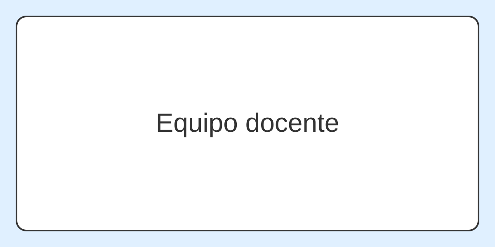

Ana Pérez
Coordinadora académica y profesora de desarrollo web.

Conquer Academy nace con la idea de acercar la formación digital a cualquier persona interesada en mejorar su perfil profesional. Apostamos por una enseñanza clara, actual y centrada en la práctica.
Queremos que cada estudiante aprenda con una base sólida y comprenda el motivo de cada etiqueta, cada estructura y cada herramienta utilizada en el desarrollo web.
Coordinadora académica y profesora de desarrollo web.
Profesor de frontend y mentor de proyectos.
Especialista en empleabilidad digital y portfolio profesional.